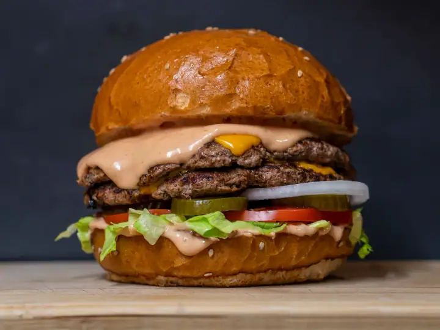
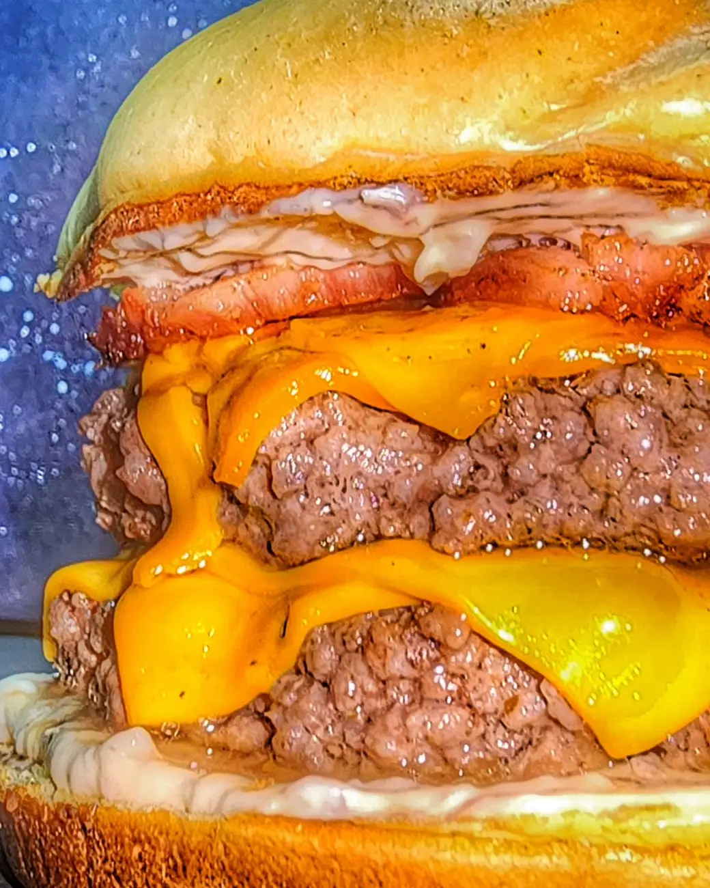
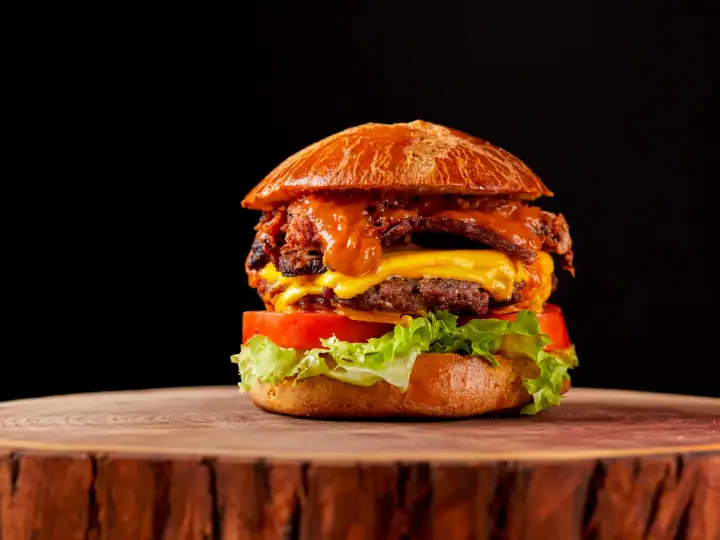
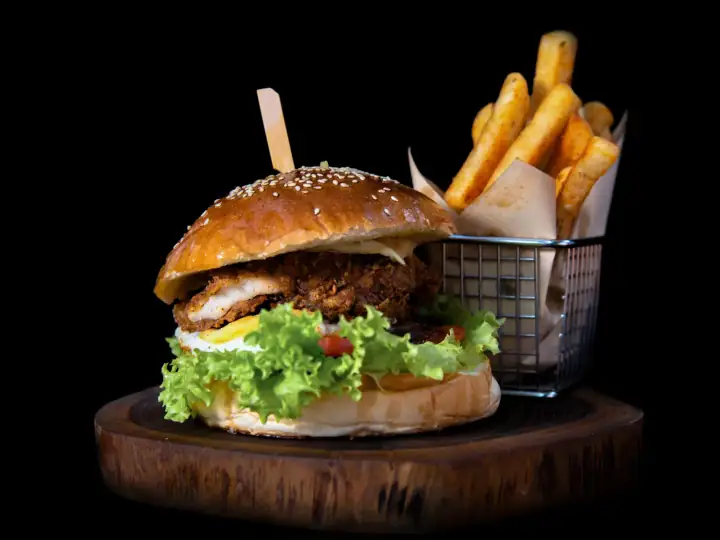
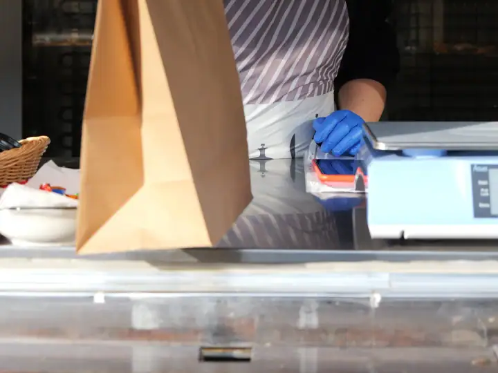
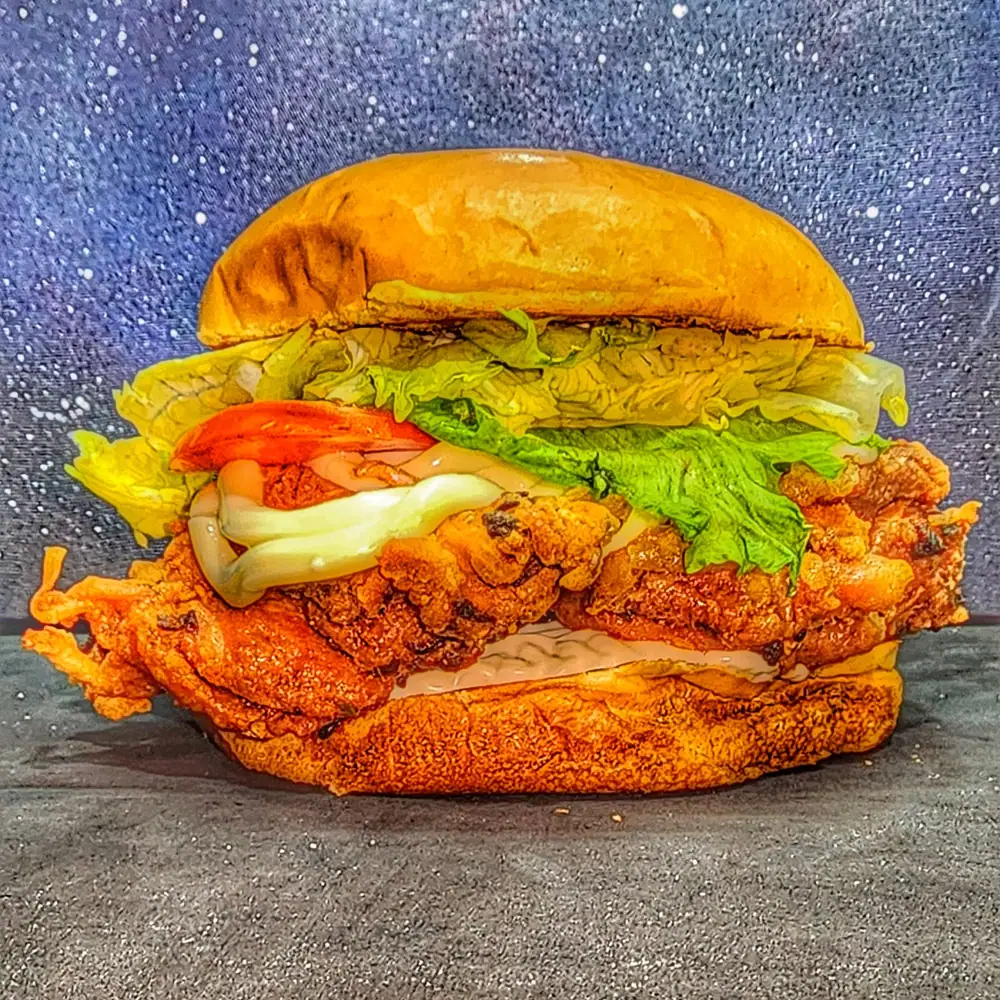
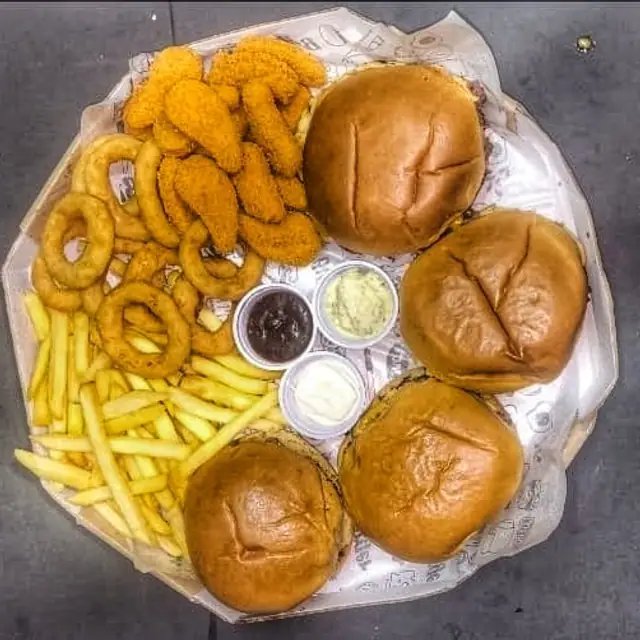
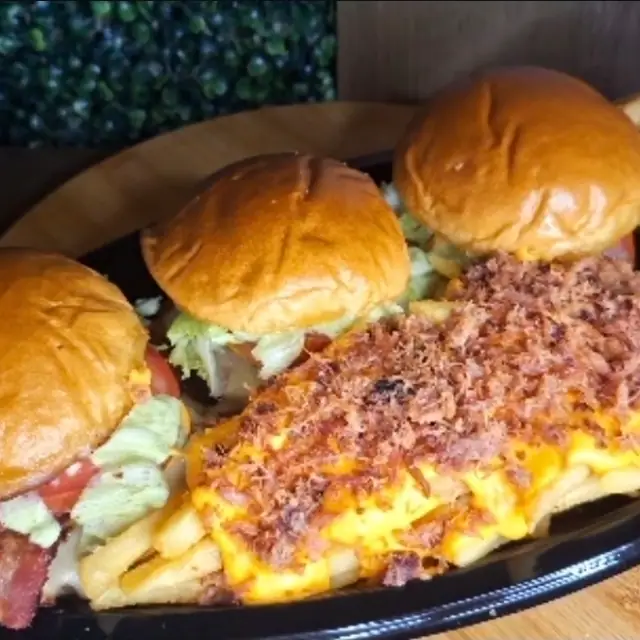

01
Burgers artesanais
Blend de carne próprio, pão macio selado na chapa e queijo derretendo. Do clássico ao mais caprichado.
Pedir agoraHamburgueria artesanal no Jardim Imperatriz · Itapecerica da Serra
Lanches caprichados, muito queijo e carne suculenta, com entrega e retirada. Nota 5,0 no Google.

Delivery e retirada
Escolha e peça direto com o Fat Burgers. A mensagem já vai pronta no WhatsApp.

Blend de carne próprio, pão macio selado na chapa e queijo derretendo. Do clássico ao mais caprichado.
Pedir agoraCarne prensada na chapa bem quente, bordinha crocante e muito cheddar. Simples e viciante.
Pedir agora

Lanche, batata crocante e bebida num pedido só, do jeito mais prático.
Pedir agora

Peça pelo WhatsApp e receba em casa ou retire no balcão, quentinho e bem embalado.
Pedir agoraNo Fat Burgers cada lanche é montado na hora, com ingredientes frescos e porção generosa. Peça pelo WhatsApp e receba em casa ou retire no balcão.
Pedido rápido, lanche feito na hora e quentinho na sua mesa ou na sua casa.
Chame no WhatsApp, peça o cardápio e escolha o seu lanche.
O lanche é montado na hora, com carne no ponto e ingredientes frescos.
Coma no salão ou receba em casa, quentinho e bem embalado.
Terça a quinta: 19h–00h · Sexta e sábado: 19h–02h · Domingo: 19h–00h
Veja mais no Instagram @.



Avaliações reais de clientes publicadas no Google Maps.
“Maravilhoso, desde o primeiro atendimento, quando entramos em contato para fazer o pedido até a entrega, entregador educado e cuidadoso com o pedido. Lanche chega bem quentinho, batata crocante e a bebida gelada. Super recomendo.”
“Todos os lanches dessa hamburgueria são extremamente saborosos e bem servidos. Hoje em dia, só vendem lanches pequenos, mas os da Fat realmente me deixa saciada, além do atendimento que é muito atencioso.”
“Melhores lanches que já comi na minha vida e olha que já morei em mais de 10 cidades! Sensacional cara!”
“Além do excelente atendimento, qualidade no lanche, simplesmente uma delícia!”
“Excelente atendimento,os lanches são maravilhosos, super recomendo.”
Não achou sua dúvida? Pergunte direto para a equipe no WhatsApp.
O Fat Burgers fica na R. Europa, 13, Jardim Imperatriz, em Itapecerica da Serra (SP), CEP 06859-400. Pelo botão "Traçar rota" nesta página você abre o caminho direto no Google Maps.
O Fat Burgers atende terça a quinta, das 19h às 00h; sexta e sábado, das 19h às 02h; domingo, das 19h às 00h. Não abre às segundas. O agendamento é feito pelo WhatsApp.
É só chamar no WhatsApp (11) 95488-6304 pelo botão "Fazer pedido". Chame no WhatsApp, escolha o lanche e combine retirada ou entrega. A equipe confirma o pedido e o tempo de preparo.
Burgers artesanais, Smash burgers, Com bacon, Combos com batata, Porções e delivery e retirada. O cardápio completo e os preços atualizados são enviados pelo WhatsApp.
É feito com blend de carne preparado na casa, moldado à mão e grelhado na hora, com pão e ingredientes escolhidos para combinar.
A carne é prensada fina na chapa bem quente. Isso cria uma casquinha crocante e muito sabor, com o miolo suculento.
O atendimento pelo WhatsApp confirma se o seu endereço está na área de entrega e qual a taxa.
Faça seu pedido no Fat Burgers em poucos minutos pelo WhatsApp.